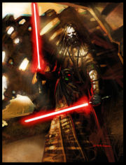

Forums galactiques > Taverne galactique : lieu de discussion informel > Recrutement
Pages : 1 2
| Kuny Réputation à la taverne : 111  27/11 ETU 12:21 | Score : 4 Détails Ma nouvelle coalition à besoin de membres intéressants, c'est pourquoi je fais une annonce ici.
Coalition L'Ordre Des Frites Description : Le terrible Ordre Des Frites, abritant entre autres les incroyables prêtres chapsis, est très puissant, et sa force grandit d'heure en heure. Constitution : Article 1: Les Friteux ne s'attaquent pas entre eux. Article 2: Les Friteux doivent être un minimum rebel, sinon cette coalition n'aura pas la touche kitsch que je veux qu'elle ait. En fait pas forcément, mais ça rajoute un article. Article 3: Il faut participer sur la taverne ou sur l'AG un tout petit peu. Article 4: On n'attaque pas les pauvres petits commandants ridicules mais néanmoins attachants, surtout avec un noeud rose sur le haut du crâne. Article 5: Tout Friteux est libre de ses opinions, politiques et tout ce qui s'ensuit. La Constitution va subir des modifications sous l'impulsions des nouveaux membres (normalement). | ||
| Kuny Réputation à la taverne : 111 28/11 ETU 20:37 | Score : 4 Détails Kuny arriva, l'air décidé.
HEUP ! qu'il geula. | ||
| Araskel Réputation à la taverne : 396  28/11 ETU 21:49 | Score : 1 Détails Moi Araskel, Khan de la nation Tribale, invite tout les commandants un tant soit peu sensé a rejoindre l'Ordre des frites.
C'est au nom de mon peuple que je parle! J'ai vu les friteux parcourir l'espace, j'ai sentit l'odeur de la frite aux abords des Steppes! Si vous voulez que votre peuple puissent se devellopé et s'epanouir en toutes frititude, viendez chez l'ordre des frites! Et c'est pas parce que j'y suis pas que je suis pas un tant soit peut sensé.... | ||
| Kuny Réputation à la taverne : 111 29/11 ETU 14:57 | Score : 0 Détails Merci cher barman.
J'espère que ce recrutement, directement inspiré des méthodes belges traditionnelles, va inciter beaucoup de braves à se joindre à notre secte galactique. | ||
| Araskel Réputation à la taverne : 396 29/11 ETU 22:17 | Score : 0 Détails Oui, malgres le silence des commandants sur la taverne, j'aimerais avoir votre x-com, qui doit debordé de supplications pour obtenir le pardon friteux.
| ||
| Kuny Réputation à la taverne : 111 29/11 ETU 22:24 | Score : 0 Détails Eh bien, je suis un peu déçu, personne ne demande!
On est 5, mais on est une petite équipe soudée.... Enfin, j'espère... D'ailleurs, pour prouver ma bonne volonté et ma bonté sans égale, j'avais invité Wesincia Corrino. Mais elle a rien répondu! | ||
| Kordek Réputation à la taverne : 62  29/11 ETU 22:43  | Score : 1 Détails Elle est pas déja prise cette princesse impériale, si ?
Bref, je suis pas certain pour ce coup-là, mais si y'a bien une chose qui est sûre, c'est que vos histoires de frites m'ont donné faim ! Patron ! Mets-nous une bonne pièce de viande pendant que ce p'tit gars simpa me narre l'histoire de la Frite, j'suis sur que ca doit être épatant ! ALors, comment c'est né l'Ordre de la Frite ? Une convention de cuisiniers qui a viré au regroupement idéologique autour d'une valeur forte ? Ou une symbiose entre plusieurs commandants soucieux de la gastronomie ? Balance la sauce, friteux ! | ||
| Kuny Réputation à la taverne : 111 29/11 ETU 23:00 | Score : 1 Détails C'est comme du vintage cette coalition : du neuf avec du vieux!!
Alors en fait c'est né d'un esprit malade, piégé dans un cerveau étriqué, lui-même abrité par un crâne plus dur que l'acier. C'est à dire-moi. Je ne sais pas si tu connais les Chaps, ami patate, mais si tu ne les connais pas cherche dans les archives. Enfin bon voilà, les Chaps sont revenues il y a peu de temps, et ont décidées de revenir au devant de la scène politique, ou plutôt d'y arriver. De joyeux lurons pleins d'entrain et de bonnes idées s'ajoutent à ça. Ce qui nous fait une coalition énergique, tolérante, classe, drôle (normalement), ayant le monopole des boissons d'Origine, et active (en plus). Kuny perdit son sourire l'espace d'un instant:ils viennent même pas ces cons-là...Kuny reprit sont sourire commercial:Que demander de plus ? | ||
| Mantus Réputation à la taverne : 11  10/12 ETU 19:17 | Score : 0 Détails Bonjour
Est-ce que vous recrutez encore? Car votre coalition m'interesse. Mns | ||
| Araskel Réputation à la taverne : 396 10/12 ETU 21:28 | Score : 0 Détails Bien sur cher mantus a l'eautus!
Notre cher frite sacré Kuny le lingus vas certainement vous invité dans notre veneré ordre! | ||
| niko Réputation à la taverne : -2 12/12 ETU 18:49 | Score : 0 Détails moi aussi je recrute
| ||
| Kuny Réputation à la taverne : 111 12/12 ETU 20:08 | Score : 0 Détails Oui, mais toi tu n'es rien face à la grandeur des Chaps.
| ||
| iriki[le retour] Réputation à la taverne : 67  12/12 ETU 20:10 | Score : 0 Détails Oui tu as raison ,il lui manque la mayonnaise et le ketchup .
Car sans sa ,un vrai chaps ne se mange pas . | ||
| Kuny Réputation à la taverne : 111 12/12 ETU 22:11 | Score : 0 Détails Kuny regarda Iriki, l'air profondément perplexe.
Des Chaps vinrent lui mettre une camisole et Kuny partit. | ||
| VIDMAR Réputation à la taverne : 4  12/12 ETU 22:13 | Score : 0 Détails bonsoir,
why not comme disait l'autre!!! donc j'attends... | ||
| Silimaure IA Réputation à la taverne : 24  13/12 ETU 07:18 | Score : 0 Détails Tiens les Chaps existe encore, vous aimez toujours vous faires suspendre par Dieu ?
| ||
| Kuny Réputation à la taverne : 111 13/12 ETU 13:04 | Score : 2 Détails Bien sûr qu'on adore. Et toi, tu aimes toujours te prendre des vents monumentaux à ce que je vois!
| ||
| Kuny Réputation à la taverne : 111 14/12 ETU 20:19 | Score : 0 Détails Une soucoupe volante sortie tout droit d'un vieux film de SF vint se poser dans la salle. Kuny en sortit et brailla :
SI VOUS ETES UN COMMANDANT MOTIVE, PLAISANT ET ASSEZ INFLUENCABLE, OU QUE VOUS ETES UNE JOLIE DONZELLE EFFAROUCHEE, RICHE PAR-DESSUS LE MARCHE, VENEZ DANS L'ORDRE DES FRITES!! On entendait la voix d'Araskel en fond sonore répétant en boucle "Kuny is back to cass you les oreilles!" | ||
| Araskel Réputation à la taverne : 396 14/12 ETU 21:32 | Score : 1 Détails "Rejoignez Kuny le Lingus! fournisseur officiel de Ketamine des steppes galactiques!!!!!!"
| ||
| Ekalar Réputation à la taverne : 18  14/12 ETU 22:19 | Score : 0 Détails ah ah !!!
Qu'ouï-je ? De la kétamine galactique ? Et des acides sur papiers buvards ? il reste une place ? |
Pages : 1 2
Forums galactiques > Taverne galactique : lieu de discussion informel > Recrutement